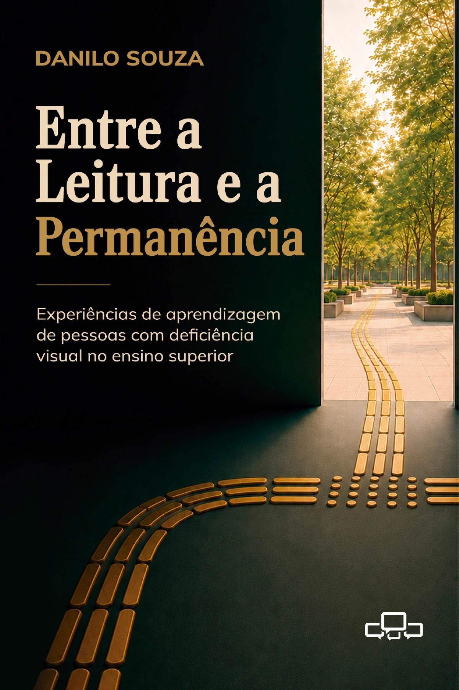
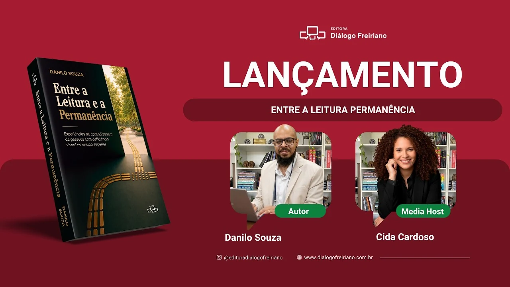

Livro
Entre a Leitura e a Permanência
Experiências de aprendizagem de pessoas com deficiência visual no ensino superior.

Lançamento oficial previsto para a segunda quinzena de outubro de 2026
O ingresso no ensino superior costuma ser tratado como ponto de chegada. Para estudantes com deficiência visual, porém, ele pode marcar o começo de uma trajetória atravessada por barreiras. Permanecer, participar e aprender depende de materiais didáticos acessíveis, ambientes digitais compatíveis com tecnologias assistivas, práticas docentes inclusivas e instituições preparadas para reconhecer diferentes formas de acesso ao conhecimento.
Resultado de uma pesquisa de mestrado em Educação com ênfase em tecnologia da informação, o livro investiga a acessibilidade de materiais didáticos em cursos de graduação e escuta estudantes com deficiência visual sobre suas experiências no ensino superior.
O livro também está disponível na Feira do Livro (abre em nova aba).
Prefácio
Acessibilidade como vetor da inclusão digital!
Prefácio escrito por Cid Torquato (abre em nova aba).
Cid Torquato é advogado. Foi Secretário Municipal e Secretário Adjunto de Estado dos Direitos da Pessoa com Deficiência de São Paulo. Atua como Coordenador do Núcleo de Inovação em Acessibilidade do InovaUSP e é Embaixador do Prêmio WSA Brasil.
Entrevista
Entrevista de lançamento
Conversa gravada para a Editora Diálogo Freiriano sobre a pesquisa, a trajetória da obra e os temas discutidos no livro.

Assistir no YouTube (abre em nova aba)Amostra
Leia um trecho do livro
A seleção reúne a apresentação do autor e uma passagem do capítulo 3, dedicada à percepção dos estudantes sobre acessibilidade e permanência.
Leia uma amostra
Apresentação
Este livro nasce de uma pesquisa acadêmica, mas não se limita a ela. O texto que o leitor tem em mãos foi originalmente desenvolvido como dissertação de mestrado em Educação com ênfase em tecnologia da informação, tendo como eixo central a acessibilidade de materiais didáticos para estudantes com deficiência visual em cursos de graduação e pós-graduação, especialmente em contextos mediados por tecnologias digitais.
Ao transformar esta pesquisa em livro, minha intenção não foi apagar sua origem acadêmica, nem convertê-la em um texto completamente novo. Ao contrário, optei por preservar sua estrutura principal, seus dados, suas entrevistas e suas análises, por entender que o valor deste trabalho está justamente na escuta das pessoas que participaram da pesquisa e nas questões que suas experiências tornam visíveis.
A investigação partiu de uma inquietação simples, mas persistente: o ingresso no ensino superior, por si só, não garante permanência, participação ou aprendizagem. Para estudantes com deficiência visual, o acesso ao conhecimento depende de múltiplas condições, entre elas a disponibilidade de materiais didáticos compatíveis com tecnologias assistivas, a atuação institucional, a formação docente e a compreensão de que acessibilidade não é adaptação eventual, mas parte constitutiva do direito à educação.
As entrevistas reunidas neste trabalho evidenciam trajetórias diversas, atravessadas por barreiras, estratégias, recursos, ausências e formas de resistência. Em muitos momentos, os relatos mostram que o estudante com deficiência visual ainda precisa negociar, explicar e justificar necessidades que deveriam ser consideradas desde o planejamento dos cursos, dos ambientes virtuais, das avaliações e dos materiais de estudo.
Esta publicação busca, portanto, ampliar a circulação dessas reflexões para além do espaço estritamente acadêmico. Ao articular educação, tecnologia da informação, acessibilidade e tecnologia assistiva, o livro se dirige a pesquisadores, professores, gestores, profissionais da educação, equipes técnicas, estudantes e demais pessoas interessadas em compreender como a acessibilidade se materializa, ou deixa de se materializar, na experiência concreta de quem busca estudar, participar e permanecer no ensino superior.
Preservar as entrevistas e os anexos nesta edição foi uma decisão consciente. Eles não aparecem apenas como complemento documental, mas como parte essencial da pesquisa. São as vozes dos participantes que sustentam muitas das perguntas aqui apresentadas e que lembram, de forma direta, que nenhuma discussão sobre acessibilidade deve prescindir da participação das próprias pessoas com deficiência.
Espero que esta obra contribua para qualificar o debate sobre educação inclusiva, tecnologia assistiva e produção de materiais didáticos acessíveis. Mais do que oferecer respostas definitivas, ela pretende registrar uma escuta, organizar problemas e provocar novas perguntas sobre o modo como o ensino brasileiro tem recebido ou deixado de receber estudantes com deficiência visual.
Danilo Souza
Do capítulo 3 — Resultados e discussão
Entretanto, é importante salientar que instituições de ensino que se tornam efetivas em políticas de acessibilidade geram, além de um ambiente acadêmico diverso, um sentimento de continuidade e inspiram os alunos a permanecerem no ambiente acadêmico, como podemos observar no trecho da entrevista 4 a seguir.
Entrevistador: Agora eu vou entrar em algumas perguntas que são sobre sua percepção, no geral, em relação à universidade etc. Como você avalia a importância dos recursos ofertados pela universidade ou instituição de ensino para contribuição na sua permanência no ensino superior? E aqui eu tenho três opções: contribui completamente, contribui parcialmente ou não contribui.
Entrevistado 4: Contribui completamente.
Entrevistado 4: Eu tranquei o curso em 2019, porque eu saí de lá, e estou retornando agora e tive várias ofertas de várias universidades. Mas, por me sentir seguro e por me sentir habituado e conhecer de perto o trabalho da [Informação sigilosa], eu resolvi voltar para a [Informação sigilosa].
Entrevistador: Entendi. Então, contribui tanto que você optou por permanecer nessa universidade em relação a outras que poderiam ter outras vantagens, certo?
Entrevistado 4: Sim, e outros cursos. Depois desse superior que eu quero terminar, eu quero fazer uma pós e quero fazer pela [Informação sigilosa] mesmo.
Por esse motivo permanência é uma questão abordada frequentemente pelo NAPNE, pois a evasão no ensino superior atinge altas taxas, sobretudo para alunos com deficiência, principalmente quando a instituição não se compromete em reduzir os obstáculos enfrentados por esses alunos. Para que o universitário tenha e consiga chegar ao final da graduação e obter a sua certificação, é fundamental estratégias de acompanhamento do desenvolvimento desse aluno, identificando suas principais dificuldades nas atividades de ensino, pesquisa e extensão; e buscando por soluções inclusivas (Faro, 2013; Soares, 2011).
Gostou? Adquira o livro.